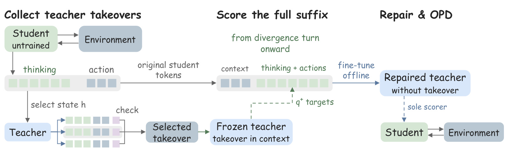
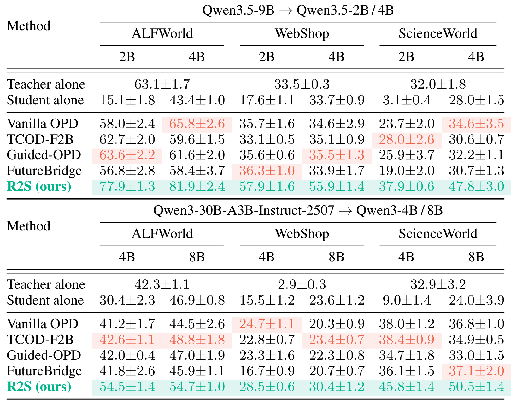
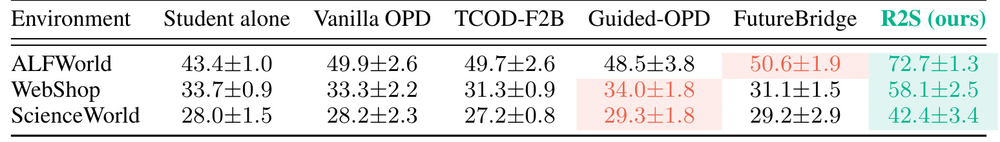
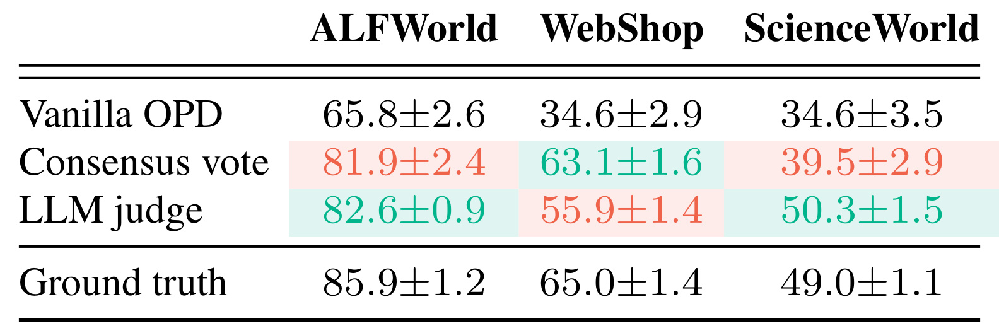
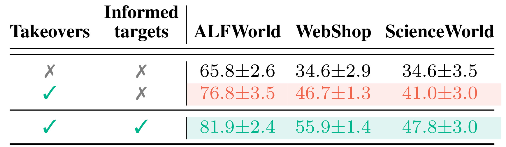
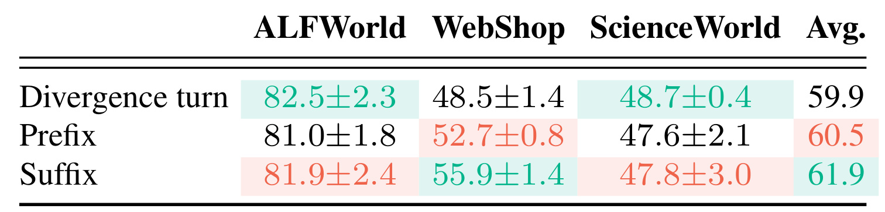
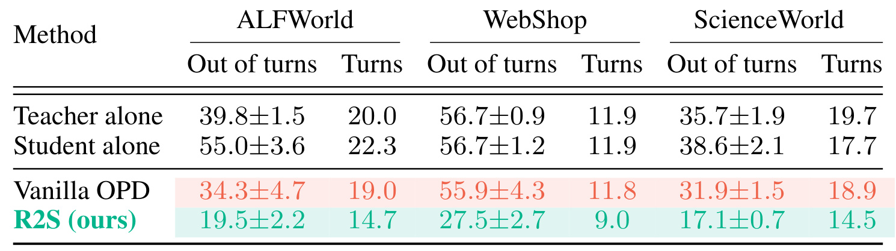
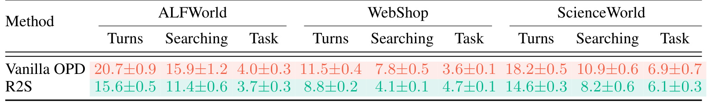

R2S：把教师的任务完成能力蒸馏进逐词评分器
论文：Capable Teacher, Myopic Scorer: Reward-Free Teacher Repair for Agentic On-Policy Distillation。作者：Shu Zhao、Tan Yu；首作者机构：NVIDIA（英伟达）。首次公开：2026-10-20，版本 v1；阅读日期：2026-10-22。论文入口：arXiv:2610.28586。实验数值来自原论文及附录，为作者报告结果，尚无独立复现。
教师在看不到回合最终结果时逐词评分，因而放过安全却拖延的动作；结果奖励会以零分惩罚这些行为，而代理式在策略蒸馏缺少这项惩罚。
1. 背景和问题
本文针对一种具体训练配置：学生在交互环境中生成自己的多轮轨迹，教师对学生实际产生的每个词元给出分布，训练再把学生拉向该分布。教师并不接管每一次交互，也不直接承担环境行动。评估中的家庭与科学任务最多允许三十轮交互，购物任务只有十五轮；每次额外搜索都会消耗同一固定预算。于是，“教师作为代理能否完成任务”与“它作为词元评分器是否提供正确学习方向”成为两个不同的量。
传统解释强调误差累积：学生早期选择失误，后续历史逐步偏离教师熟悉的分布，最后连教师都难以提供可靠目标。按这个解释，缩短训练回合、逐步拉长轨迹、将部分轮次交给教师、重放教师前缀，或者在高分歧状态插入教师指导，都是合理的修复方向。R2S 并未否认分布漂移存在，而是提出可被反驳的检验：如果学生真的进入教师能力之外的状态，那么让教师从同一个状态开始行动，也应经常无力完成。论文因此恢复学生的中间环境状态，重复采样教师接管轨迹，而非只比较两者从初始任务出发的分数。
诊断采用 Qwen3.5-9B 教师和 Qwen3.5-4B 学生，挑选第五轮以后学生与教师分歧最大的状态，保证比较不只是初始容易状态。Table 1 中，ALFWorld 的学生后续成功率为 39.9%，教师接管为 44.2%；WebShop 为 6.1% 对 10.2%；ScienceWorld 为 18.6% 对 27.5%。对学生本来会输掉的状态，至少一次接管能够挽救的比例分别为 45.2%、14.4%、51.7%。这里“接管成功率”和“被挽救状态比例”的分母不同，不能拿后者当教师单次采样准确率。它们共同说明，一部分错误状态仍可解，问题并不完全来自教师无能为力。
更细的对照让同一个教师对同一段学生文字打两遍分：一遍只有正常历史；另一遍额外看见一条已完成任务的教师接管。加入接管后，学生思考中犹豫词的概率下降幅度，在三个环境分别为 8.2%、8.3%、13.0%；搜索词为 6.2%、7.7%、16.6%；其他思考词只有 3.5%、4.2%、5.0%。这些数字不是词频下降，也不是训练后行为变化，而是固定学生文本在两种教师上下文下的评分变化。原文用平均对数概率差再转成概率下降量，因此它也不能直接解释为每个犹豫词都遭到同一比例惩罚。动作词分布几乎不变，使“未来结果主要改变谨慎思考倾向”这个解释更有针对性。
这就形成论文命名的 rollout–scorer gap，即教师实际续写能力与逐词监督能力之间的落差。作为行动者，教师能看到动作后果，继续根据观察调整，最终得到一个结果；作为评分器，它只面对学生写下的局部历史。继续查看、再次搜索、推迟承诺，在局部都可能显得合理，却消耗有限轮数。带结果奖励的强化学习会在超时后给整条失败轨迹零分；纯蒸馏没有这条独立反馈，可能把“谨慎但不断拖延”的局部模式稳定传给学生。因此，更低的学生教师散度不自动意味着更强的任务完成能力。
普通 OPD 的数学目标在论文式（1）中为：
符号解释：$\pi_\theta$ 是参数为 $\theta$ 的学生策略，$h$ 是学生自己访问的词元历史，$T$ 是教师的条件分布，$\operatorname{KL}$ 是反向 KL。历史由学生生成，教师只在这些历史上评分。这个期望没有显式依赖最终成功标记；教师分布当然可能隐含未来知识，但训练没有保证这种知识在当前学生状态上转化为足够强的完成信号。
研究价值由此落在监督接口上：不一定要换更大的教师，也不一定只修改学生轨迹采集方式，而是先改造真正进入蒸馏损失的分布。与把成功示范直接交给学生不同，R2S 希望让教师在学生自己的错误文字上学会更有终局意识的判断。这尤其适合解释为何一个从起点表现一般的教师，仍可能在学生已推进的中间状态提供有用继续方案。但这是文中环境支持的经验命题，不能反推任意弱教师都能被修成强评分器。附录全组合分析里，教师接管胜过学生的情况为十二组中的十一组，Qwen3-8B 在 ALFWorld 是例外，正文不能把主诊断的“每个环境”扩大成“全部组合均成立”。
局部谨慎并非天然有害，论文也没有主张删除自我检查或一律压低搜索词。难点是同一动作的边际信息收益依赖剩余预算和任务进度，而逐词分布只能通过当前上下文间接表达这种取舍。一次额外检查在早期可能必要，在最后两轮却可能挤掉真正执行的机会。R2S 用一条从当前状态可行的继续方案作参照，使教师看到一个实际能收束的路径；它试图弥补的恰好是这种局部合理性与整段可完成性的错位，而不是把代理统一训练得更冒进。
相比只观察训练损失，本文的研究方式更接近逐层排除解释：同状态接管排除部分“状态已经不可解”的情形；同文字上下文对照把变化定位到教师评分；固定学生训练配方后更换评分器，再检查任务完成。几个环节仍不能构成全面因果识别，因为接管筛选也改变了状态集合，但它们比单独报告最终成功率更能指出训练信号的缺口。后续方法若只调整课程长度，却继续使用同一个局部评分器，便可能避开难状态而没有修复在可解状态中反复拖延的问题。
论文对词类的处理也有边界。犹豫词包含可能、猜测、不确定等对应的英文词项，搜索词包含查看、寻找、检查及词形变体，其他思考词作为参照。它不是语义级标注器，词项可能出现在不同作用的句子里，且行动承诺词下降幅度位于犹豫词与其他词之间。故诊断应理解为群体统计倾向，而不是一条可以直接部署的禁词规则。把这些词全部压低会破坏真实不确定性表达，也可能损害必要探索；R2S 的目标来自完整教师分布，仍应通过成功与约束指标检验这种权衡。
2. 方法
2.1 从分歧状态采集教师接管
R2S 首先让尚未训练的学生在训练任务上跑完整交互，保存可重放的环境历史。筛选条件要求一轮思考至少三个词元，并以工具调用结束；每条轨迹只留一个最大分歧轮次，每个目标最多保留三个状态，再从全体中选取最多 2400 个状态。它关注思考区间，因为这里形成动作决策；动作本身不进入状态排名。对应论文式（2）：
符号解释：$t$ 是交互轮次，$y_t^{\mathrm{think}}$ 是该轮动作前的思考词元，$i$ 是位置，$T_0$ 是原始教师，$h_t$ 是轮次开始前历史。这里的 $\pi_\theta$ 为未训练学生，采样词元上的对数概率比是反向 KL 的估计；单个词元项可以为负，不能误写成每个位置都非负的精确 KL。平均后按轮次排名，也避免把长思考仅因词元多就排在前列。
每个入选状态恢复后，让教师独立接管八次，温度为 1.0，直到完成或耗尽预算。接管用于构造评分依据，学生最终训练时看不到接管文字。无奖励筛选有两种：按可观察结局分组的一致性投票，以及由 LLM 判断完成情况。足够多接管通过检查后保留状态，选通过组中最短的一条作为参考。主实验的具体门槛随环境不同：ALFWorld 投票门槛为二，ScienceWorld 为一并利用完成消息，WebShop 用裁判检查购买是否满足指令。这里“不读取任务奖励”不等于完全没有关于成功的外部信息，完成消息与裁判自身都是监督资源。

Figure 2 的左侧从未训练学生与环境的交互分叉，教师接管发生在选中的状态，之后的检查决定哪些接管能成为条件参考。中间最需要注意的箭头来自“原始学生词元”：送去评分的仍是学生实际写出的思考和动作，并没有用教师答案替换学生后缀。带参考接管的冻结教师产生软目标，另一个教师副本只看普通历史，拟合这些目标。右侧再将这个副本冻结，作为学生 OPD 的唯一评分器。因而图中存在三种角色：原教师负责离线接管和目标构造，可训练教师负责离线修复，学生负责最终在环境中采样。若把它们合并成“教师带学生一起行动”，就丢失了本文与在线教师干预法的区别。图中的全后缀还意味着分歧轮后每一个助手位置都可能受训练，包括没有工具调用的助手轮，而历史前缀只是上下文，环境观察和用户输入不属于被拟合标签。训练输出仍是普通条件词元分布，所以修复完成后不必在每一次学生评分时重新生成八条未来轨迹；计算代价被转移到前处理和一次教师微调。这个结构解释了其接口兼容性，却不意味着总计算免费，八倍接管是额外且可能很大的成本。修复的输入输出边界也由此清楚：输入普通学生历史，输出可替换原教师分布的评分，而非新的行为规划器或显式任务奖励模型。
图中选择接管之后仍保留冻结原教师这一点同样重要：标签源在拟合期间不漂移，可以将目标拟合误差与学生训练误差分开检查。若边生成学生轨迹边更新标签教师，便不再是论文采用的离线固定目标设置，复现对照也会失去可比性。
2.2 用终局知情目标监督完整助手后缀
对保留状态 $h$，选出的接管 $\tau_h$ 被插入为学生第一轮之前的一条参考消息。消息列出教师各步的思考和动作，不带重放前缀及环境观察，并把它描述成同任务成功专家完成示例。原始学生文字保持不变，位置整体平移一个常量，因此带参考和无参考的两个评分流能够逐位置对齐。原教师一次性计算所有目标，后续教师副本变化时不重新生成标签；每位置只缓存概率最高的十六个词元并重新归一化。这个截断是存储和监督分布的真实设计，不能把实验理解成完整词表教师分布的无损转移。
论文式（3）的修复目标为：
符号解释：$h$ 是采样分歧状态，$h'$ 遍历该状态之后学生写出的每个助手词元历史，$q^+$ 是看过接管的原教师目标，$T_\phi$ 是不看接管的可训练副本，$\operatorname{CE}$ 是目标分布对模型分布的交叉熵。实际实现先在每个状态的所有标记位置取平均，再在状态间平均，防止长后缀天然获得更大权重。标签覆盖思考与动作，但不覆盖提示和观察。副本采用完整词表的对数 softmax 匹配重归一化的前十六项目标，其余词元仍通过归一化竞争得到约束。
2.3 修复教师后冻结为普通 OPD 评分器
教师从 $T_0$ 初始化，文本参数全量训练一个 epoch，学习率为 $2\times10^{-6}$，每批八个有标签状态，以目标为单位划出百分之十验证集，避免同目标状态泄漏到训练和验证两边。使用 AdamW、十步预热、余弦衰减至初始值十分之一、梯度裁剪 1.0 和 bf16；Qwen3.5-9B 的视觉塔冻结，所谓全参数只涉及文本解码器。完成后再冻结 $T_\phi$，原教师不参与学生在线训练。普通历史输入到修复教师即可得到评分，因此运行时没有参考接管插入，也没有新的结果奖励项。
学生训练仍使用论文式（4）的采样优势：
符号解释：$A_{t,i}$ 是学生第 $t$ 轮第 $i$ 个采样词元的优势，$\beta=1$ 为系数，$T$ 在普通基线中取原教师，在 R2S 中取修复教师，$\tau$ 为学生交互轨迹。该优势进入裁剪 PPO 代理目标，比例裁剪为 0.2；观察位置屏蔽，只更新学生生成词元，没有额外 KL 或熵项。学生阶段共训练一百五十步，普通环境每步十六条轨迹，WebShop 每步一百二十八条，学习率固定为 $10^{-6}$。因此本文的直接对照是只改变教师评分器的 vanilla OPD，另外三种学生侧方法用于比较既有改进路径。全文核心编号公式只有四个，保留四个即可完整复述机制，无须人为扩增公式数量。
3. 实验结果
3.1 十二个模型环境组合的主结果

Table 2 以成功率为单位，上半部分是 Qwen3.5-9B 教 Qwen3.5-2B/4B，下半部分是 Qwen3-30B-A3B 教 Qwen3-4B/8B，每组分别在三个环境测试，形成十二个单元格。9B 教师下，R2S 的 ALFWorld 成功率为 77.9±1.3、81.9±2.4，WebShop 为 57.9±1.6、55.9±1.4，ScienceWorld 为 37.9±0.6、47.8±3.0；对应 vanilla OPD 为 58.0、65.8、35.7、34.6、23.7、34.6。较大 MoE 教师下，R2S 六格分别为 54.5、54.7、28.5、30.4、45.8、50.5，也全部超过对应基线。作者报告相对每格最强既有代理蒸馏方法，9B 组平均提高 17.0 个百分点，30B-A3B 组提高 8.5 个百分点，总平均 12.8 个百分点。这里是绝对成功率百分点，不能写成相对百分比增益。
统计口径决定这些数值的强度：每格主实验是一条训练运行的最终检查点，在三次采样解码上计算均值和标准差，不能称为三次独立训练。ALFWorld 与 ScienceWorld 主表取已见和未见 split 均值，WebShop 主表只用五百个标准目标；另一个不相交的二百五十六目标池在附录展示。训练中每二十五步评估，但没有按最好检查点挑选最终结果。Figure 3 另对 9B 教 4B 做三条独立学生训练，R2S 的三次运行共享同一个修复教师，因此其波动不包含教师修复阶段的随机性。附录 Table 12 拆分口径后，9B 教 4B 的 ALFWorld 已见/未见分别为 80.5/83.3，WebShop 标准池/新池为 55.9/54.7，说明主表改善不只来自某一拆分，但这些环境仍不能代表开放网络。
还应谨慎解释“超过教师”：30B-A3B 自己在 WebShop 只有 2.9%，它平均十五轮里有 13.7 轮没有调用动作工具，约百分之九十四轨迹超时，说明起点工具调用行为存在严重问题。学生从自己已推进的状态获取接管知识仍可能有效，但不能据此把该教师的知识能力整体判为弱，也不能把所有超过教师的幅度归因于通用推理涌现。主表最直接支持的是修复评分接口对这套完整历史、固定工具协议有效。
3.2 同模型自蒸馏能否带来收益

Table 3 把教师与未训练学生都设为 Qwen3.5-4B，检验是否必须依赖更大模型。R2S 在 ALFWorld、WebShop、ScienceWorld 分别得到 72.7±1.3、58.1±2.5、42.4±3.4；普通自蒸馏只有 49.9±2.6、33.3±2.2、28.2±2.3。与普通自蒸馏相比提高 22.8、24.8、14.2 个百分点，也高于 Table 2 由 9B 教师普通 OPD 得到的 65.8、34.6、34.6。未训练学生三个起点为 43.4、33.7、28.0，其他自蒸馏基线在购物与科学环境几乎停留原地，而修复后的自身评分能够显著改善训练。
但这里有一个决定复现是否成立的特殊分支：两个模型初始完全相同时，分歧式理论上为零，无法按最大分歧排序。论文改为每条未训练轨迹随机抽一个合格轮次，并保留相同目标上限和预算；接管和筛选也由四十亿参数模型完成，没有额外大模型进入这一自蒸馏流水线。因此该实验支持“自身多次尝试经过筛选，再转成评分可以挖出已有能力”，不支持“相同模型仍能依靠分歧找难点”。与普通模型组比较时必须承认状态采样机制发生变化。
附录拆分还能排除平均数掩盖一侧崩溃的担忧：ALFWorld 已见和未见为 69.5 与 75.9，ScienceWorld 为 45.2 与 39.6，WebShop 标准目标仍为 58.1。虽然都优于普通自蒸馏，但科学任务已见集标准差为 5.7，样本和随机解码不确定性不可忽略。这组实验提供一个有价值的成本方向：不先采购更大教师，也能尝试离线多采样修复；它没有提供同预算对照，八次接管与修复本身仍要记入总成本。
另一个需要审视的问题是随机状态是否已经足够好：自蒸馏结果显示即便失去分歧排名仍有明显收益，但这不能证明高分歧采样在异构教师组没有价值。要比较二者，应固定同一教师、同一预算与相同目标上限，只替换状态挑选策略；当前跨表比较同时改变模型和采样，无法做这样的归因。
3.3 无任务奖励筛选与真值筛选

Table 4 固定 9B 教 4B，只改变接管选择。三个环境的普通 OPD 为 65.8、34.6、34.6；一致性投票得到 81.9、63.1、39.5；LLM 裁判得到 82.6、55.9、50.3；读取真实任务奖励的对照得到 85.9、65.0、49.0。两种无奖励筛选在所有环境都优于普通 OPD，支持方法不依赖任务奖励接口。与此同时，投票与裁判的相对次序随环境反转：购物中投票领先裁判 7.2 个百分点，科学中裁判领先投票 10.8 个百分点，不能选出一个跨场景恒优的规则。
真值一行是使用奖励信息的诊断对照，不应与“无奖励”主方法一起宣称无标签训练，更不能简单视作必然上界。科学任务中裁判的 50.3 高于真值的 49.0，但这只是一组有限采样和筛选数据的最终结果，不代表裁判比环境真值更正确；筛选会共同改变保留状态数、轨迹长度和参考内容。反过来，投票可能让多个一致但错误的结局形成多数，所以一致性不等于真实性。主实验中科学环境还使用可观察的完成消息，这一点必须与消融中裁判不读奖励和完成消息的设置区分。
这张表适合用来估计过滤器敏感性，而不是据此承诺任意领域都可以扔掉奖励。实际迁移需要先定义什么叫“同一结局”：商品标识、任务完成消息和家庭环境中的终止各有语义，字符串一致可能合并错误结果，也可能把等价正确解拆散。还应分别统计过滤前状态量、每状态通过次数以及被选最短轨迹长度，才能知道提升来自评分知识还是样本选择。原论文给出了筛选方式与成功率，尚未完整分离这些因素，因而这部分因果解释仍有边界。
3.4 接管作为示范与接管作为评分上下文

Table 5 将“拥有接管数据”和“利用接管知情目标”分开。三行依次是无接管的普通 OPD、将选中接管拿来对教师做标准 SFT、用这些接管形成软目标的完整 R2S。ALFWorld 成功率依次为 65.8、76.8、81.9，WebShop 为 34.6、46.7、55.9，ScienceWorld 为 34.6、41.0、47.8。先加入接管示范，已分别带来 11.0、12.1、6.4 个百分点；再改为知情软目标，又带来 5.1、9.2、6.8 个百分点。由此可见，有用未来样本本身贡献相当大，不能把全部收益都说成新损失函数独占。
这个控制的训练对象仍是教师，之后学生再从它蒸馏，不能误述为学生直接模仿接管。标准 SFT 让教师提高教师轨迹上真实词元的概率；R2S 则让教师在学生自己的文字位置匹配见过未来后的完整软分布。二者在监督文本和监督密度上都不同，所以实验支持的是“完整知情目标配方更好”，还不足以只把差额归给软标签优于硬标签这一单因素。尤其在学生错误后缀上降低拖延词的概率，是接管 SFT 没有直接给出的定位信号。
从实现角度，这也是是否值得承担逐位置缓存成本的判断依据。如果仅收集接管后做教师 SFT 已能带来收益，则资源紧张时有一个更便宜的中间基线；但要复现完整 R2S，仍需保证学生原流不变、参考插入偏移一致、目标不重复重算和状态内平均。表中 WebShop 的增量最大，提示局部评分缺少购买承诺信号可能尤为重要，不过跨环境样本构成也不同，这个解释还需要针对性词类和行为实验，不能仅凭三列表格认定普遍规律。
标签微调控制沿用相同教师修复配方，减少了优化器选择造成的混淆；不过状态目标和教师示范的词元规模仍应单独记录，才能进一步区分训练文本与标签形式两类因素。
3.5 只修分歧轮、前缀还是完整后缀

Table 6 的三行对教师修复位置做对照，单分歧轮在三个环境为 82.5、48.5、48.7，前缀为 81.0、52.7、47.6，后缀为 81.9、55.9、47.8；跨环境平均依次为 59.9、60.5、61.9。完整后缀平均最好，主要优势集中在 WebShop，比单轮高 7.4 个百分点，比前缀高 3.2 个百分点。然而 ALFWorld 和 ScienceWorld 的最高均值来自单轮，分别比后缀高 0.6 与 0.9 个百分点。因此后缀是主配方及平均更强的选择，并非每个环境的严格最优区间。这些差距中有些小于所报告解码标准差，不能把排名差异解读为稳定显著优劣。
机制上，后缀的合理性在于局部迟疑可能在之后多轮持续出现，只修第一次分歧未必改变延迟承诺的连锁模式。前缀则把未来信息投射到分歧之前，可能修正导致错误状态的早期思考；它同样有效，说明终局知情目标的作用不只发生在最难状态。这也限制了“高分歧点就是唯一病灶”的说法。三种区间都大幅超过普通 OPD，最稳妥的结论是修复目标有价值，覆盖范围决定收益分配。
进一步复现应按标记词元预算而非仅按状态数比较，因为后缀、前缀与单轮的标记长度不同，计算和梯度统计也不同。论文实现先对状态内位置平均，可避免长状态直接统治梯度，但不能自动消除训练信息量的差别。若推荐代理的一次工具调用成本很高，完整后缀可能囊括更多与终局有关的错误；若后半段充满不可恢复噪声，扩大监督也可能学到不可靠知情判断。该表没有覆盖这种不同可恢复率的系统扫描，应把它当后续实验问题，而不是默认全部后缀永远最可靠。
3.6 超时率与完成所需轮次

Table 7 在已见拆分统计评估行为，9B 教 4B 的普通学生与 R2S 比较：ALFWorld 超时率从 34.3±4.7% 降至 19.5±2.2%，轮次从 19.0 降至 14.7；WebShop 超时率从 55.9±4.3% 降至 27.5±2.7%，轮次从 11.8 降至 9.0；ScienceWorld 从 31.9±1.5% 降至 17.1±0.7%，轮次从 18.9 降至 14.5。对应绝对超时下降为 14.8、28.4、14.8 个百分点，约为普通 OPD 的四成到五成降幅。它们是任务过程统计，不是模型前向延迟或吞吐，不能写成端到端推理提速百分之五十。
教师自己三环境超时率为 39.8%、56.7%、35.7%，普通蒸馏学生接近这个水平，而修复学生明显更少超时。这个配对与论文的监督缺口一致：学生接近教师原评分分布时，也继承了与其终止方式相关的行为；评分被修复后，学生有机会在成功率更高的同时缩短轮次。ALFWorld 包装器只在成功时结束，所以所有失败都是超时，成功率和超时率高度互补；购物和科学环境则不能默认只有超时一种失败。若不说明环境终止规则，就会高估超时指标提供的独立证据量。
Figure 4 另显示修复教师在按目标划分的未见状态上更接近知情目标，置信区间由目标级 bootstrap 构造。这是一条连接评分变化与行为变化的中间证据，但目标本身由原教师和筛选接管产生，并非独立真值。拟合目标更好与任务更好同时发生，支持本文机制，却没有严格证明每一个超时下降都由特定犹豫词惩罚引起。要加强因果链，可固定接管与其他目标，只对犹豫、搜索和行动词分别施加修复，或对恢复难度分层测试。现有结果足以支持实践试验，不足以把所有长程失败统称为词元评分短视。
此外，轮次相同也未必意味着工具成本相同，网页搜索与本地查看的费用并不相等，迁移时应增加按工具类型加权的成本统计。
3.7 节省的是搜索轮次还是必要任务动作

Table 8 来自最后十个训练更新的学生轨迹，均值和标准差跨三次训练运行，不能与 Table 7 的三次评估解码混用。ALFWorld 总轮次从 20.7 降至 15.6，搜索从 15.9 降至 11.4，任务动作从 4.0 至 3.7；WebShop 总轮次从 11.5 降至 8.8，搜索从 7.8 降至 4.1，任务动作反而从 3.6 增至 4.7；ScienceWorld 总轮次从 18.2 降至 14.6，搜索从 10.9 至 8.2，任务动作从 6.9 至 6.1。三个环境主要减少移动、查看、等待、翻页这类搜集信息的动作，未出现同幅度削减目标动作的模式。购物环境更少搜索却更多执行商品选择购买，与“避免反复迟疑”的叙述吻合。
分类具有环境依赖。家庭环境的移动、开关、观察归搜索，拿取、放置、清洗、加热归任务；科学环境的传送、查看、阅读、等待归搜索，使用、倾倒、激活等归任务；购物里的搜索、翻页和返回搜索为搜索，打开商品、选选项、读说明和购买归任务。尤其“读说明”在购物归任务而“阅读”在科学归搜索，说明这里不能抽象成所有读取动作都应压低。总轮次也不总等于两类列的简单和，不能自行用分类差额推断遗漏行为的具体内容。
为减少“成功轨迹天然更短”带来的混淆，作者只统计获胜轨迹仍观察到搜索减少：ALFWorld 从 10.5 至 8.4，WebShop 从 3.0 至 2.0，ScienceWorld 从 9.1 至 7.1。这个检查增强了少搜索而有效完成的解释，但成功集合仍随策略变化，未构成同任务同条件的完全配对。论文没有给总 GPU 小时、显存峰值和实际服务时延，因此本节只能谈交互效率，不能给出经济成本回收结论。前处理最多 2400×8，即 19200 条教师接管，还包括未训练学生采样、筛选和一次教师微调，成本收益需随任务频率和环境工具费用重新计算。
4. 总结
R2S 的主要贡献是把蒸馏监督源拆成“会做”和“会评分”两项独立能力，并用同状态教师接管、同文本双上下文评分、修复后目标拟合及学生行为，串起一个可测试的解释。方法没有更换普通 OPD 的数学目标，而是在离线阶段把选中未来轨迹中的判断压入教师权重，最终用普通历史就能输出知情评分。主结果覆盖十二个组合，自蒸馏和组件消融进一步说明收益不只是大教师的额外知识，也不只是拿到了成功示范；不过全部结果仍是作者在有限基准上的报告。
对推荐系统，直接对应的应用是多轮购物助手、搜索推荐代理和需要连续工具调用的内容决策代理，而不是把推荐列表点击率模型直接当语言模型评分器。若用户需求已足够明确，代理仍反复搜索、翻页、询问，局部看似稳妥却错过有限交互窗口，便与本文失效模式相似。一个有条件的迁移方案是用可回放的沙箱状态，让教师从学生停滞点继续完成，再用筛选后的后续计划校准其对学生原始动作文字的评分。这里的成功必须包括真实约束满足、预算与用户目标；仅用购买或点击作为一致性结局，可能把仓促成交与有效推荐混为一谈。
至少有四项限制需要保留。第一，状态可恢复是核心前提，真实推荐曝光、库存和用户反馈无法无损重放，离线日志模拟可能引入反事实偏差。第二，无奖励筛选仍依赖投票规则、完成信号或裁判，错误共识会被压进固定评分器，且不再有在线未来检查纠偏。第三，实验集中于 Qwen 系列文本代理和三个可控环境，工具模板甚至会让大教师的起点行为严重失常，跨模型与开放环境效果尚待验证。第四，最多一万九千二百条教师接管及标签缓存成本很高，论文未给计算预算匹配的完整成本收益表。另一个统计风险是主表解码标准差不覆盖全部训练与教师修复随机性，不能把全部十二格均值领先等同于每格都完成严格显著性证明。
后续最值得做三组检验：先在固定总教师生成词元与学生训练预算下，对比教师接管 SFT、完整修复与更多普通 OPD，确认收益不是额外计算自然换来；再按真实可恢复率、任务剩余预算和学生停滞程度分层，检验高分歧采样是否优于随机或超时预警采样；最后在需要必要探索的任务中，单独衡量信息获取充分性与约束违背率，防止“少搜索”变成过早承诺。针对推荐代理还应增加长期满意度、错误购买或不相关曝光、重复内容率，而非只看终局完成。复现时最先检查的工程细节是双评分流位置对齐、目标级数据隔离、前十六项归一化和自蒸馏随机采样分支，它们任何一个偏差都可能改变实际监督含义。
在最小复现实验中，可先只选择一个可重放的购物任务子集，保留普通 OPD、教师示范微调与完整 R2S 三组，用同一批学生初始状态产生接管。除了报告成功率，还应保存每个目标通过筛选的比例、目标分布截断保留的概率质量、修复前后超时率和胜利轨迹搜索轮数。若最终成功上升但约束违背或错误购买增加，应将其视为策略权衡变化而非无条件改善；只有在目标完成与用户约束同时保持时，少交互才是有意义的效率收益。